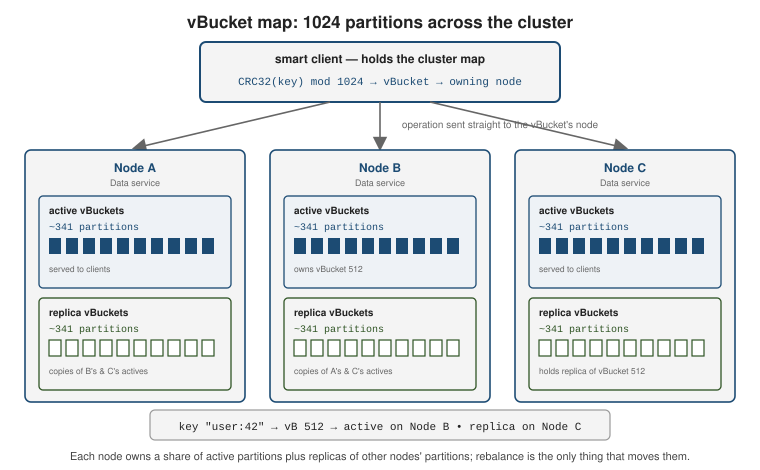
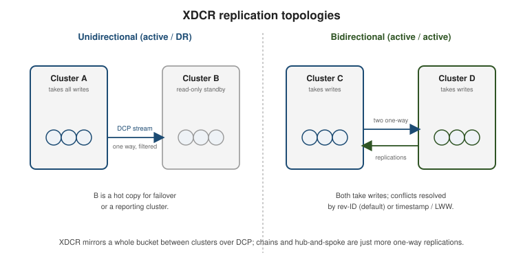

Clusters, replication, failover & XDCR
|
This section documents the current Couchbase Server 7.6.x line as published at the Couchbase Server documentation, which is the reference these pages are written and verified against. No specific patch version is pinned. Some capabilities (Enterprise-Edition-only Analytics, auditing, encryption at rest, the Backup service and rack-zone awareness, and Capella-only App Services and Columnar) are linked, not documented in depth. This content was generated with the assistance of AI and should be verified against the official documentation before being relied on in production, as Couchbase iterates quickly. Couchbase Essentials (John Zablocki, Packt, 2015), Pro Couchbase Development (Deepak Vohra, Apress, 2015) and Pro Couchbase Server, 2nd ed. (David Ostrovsky, Mohammed Haji, Yaniv Rodenski, Apress, 2015) are listed in this section’s bibliography and were consulted while preparing these pages. None of them is the primary or main reference for the section, and all three predate the current server line — they target roughly Couchbase Server 3.x / 4.0, before scopes & collections, the SQL++ rename, the Query/Index/Search/Analytics/Eventing service split, GSI-over-Views, distributed ACID transactions, RBAC, synchronous-replication durability, the sub-document API, and Capella — so on any discrepancy the official documentation at docs.couchbase.com wins, and the difference is noted. |
A Couchbase cluster is a set of nodes that present one logical database. Data is split into 1024 fixed partitions — vBuckets — that are spread across the nodes, replicated between them, and, through XDCR, mirrored to other clusters. This page covers how the cluster is laid out and scaled, how copies are kept in sync, what happens when a node fails, and how two clusters replicate to each other.
Cluster topology, services & scaling
Every node runs the cluster-management (ns_server) layer and any subset of the services: Data (KV),
Query, Index, Search, Analytics, Eventing, and Backup. Placing services on different nodes is
Multi-Dimensional Scaling (MDS) — a query-heavy workload can be given more Query/Index nodes without
adding Data nodes, and each service is sized and failed over on its own. See
Clusters
and Availability for the architecture.
Each Data node owns a slice of the 1024 vBuckets. A key is mapped with CRC32(key) mod 1024, which gives
the vBucket id; the cluster map records which node currently holds the active copy of each vBucket and
which nodes hold its replicas. The map changes only on rebalance or failover.

The SDK is a smart client: it connects to one or more seed nodes, downloads the cluster map, then sends each operation straight to the node that owns the relevant vBucket. It re-fetches the map when the topology changes, so no external router or proxy is needed.
# The connection string lists seed nodes; the SDK discovers the rest from the map.
cluster = Cluster.connect(
"couchbase://10.0.0.1,10.0.0.2,10.0.0.3",
ClusterOptions.clusterOptions("appuser", "s3cret"))
# couchbases:// selects TLS. A single DNS SRV record can expand to the seed list.
# https://docs.couchbase.com/server/current/learn/clusters-and-availability/clusters-and-availability.html
Adding or removing a node is a two-step operation: register the node (or mark one for removal), then rebalance. Rebalance recomputes the vBucket assignment and streams partitions to their new owners while the cluster stays online.
# Add a Data/Query/Index node, then rebalance it in. couchbase-cli server-add -c 10.0.0.1:8091 -u Administrator -p password \ --server-add 10.0.0.5:8091 \ --server-add-username Administrator --server-add-password password \ --services data,query,index couchbase-cli rebalance -c 10.0.0.1:8091 -u Administrator -p password # https://docs.couchbase.com/server/current/learn/clusters-and-availability/rebalance.html
A swap rebalance adds and removes an equal number of nodes in one rebalance. Because the counts match, vBuckets move directly from each leaving node to a joining node with no intermediate redistribution — the preferred way to replace hardware or upgrade an OS.
# Swap one node for a replacement in a single rebalance. couchbase-cli rebalance -c 10.0.0.1:8091 -u Administrator -p password \ --server-add 10.0.0.6:8091 \ --server-add-username Administrator --server-add-password password \ --server-remove 10.0.0.3:8091
Sizing a cluster means fixing five quantities together:
| Dimension | Guidance |
|---|---|
RAM |
The Data service keeps metadata (and, ideally, the working set) in memory. Aim for a high resident ratio; budget per-bucket quota plus headroom for Index/Search/Analytics. |
Storage |
Total data x (1 + |
CPU |
Query, Index, Search, and Analytics are CPU-bound; the Data service mostly is not. MDS lets you add cores where the load is. |
Node count |
At least |
Bandwidth |
Rebalance, intra-cluster replication, and XDCR all consume network; size the interconnect for a full rebalance, not steady state. |
See Rebalance for how partition moves are scheduled and throttled.
Intra-cluster replication with DCP
Within a cluster, replicas are kept current by the Database Change Protocol (DCP) — an ordered, restartable stream of every mutation on a vBucket, keyed by the per-vBucket sequence number. The active vBucket streams its mutations to each replica vBucket; the same stream feeds the Index, Search, Analytics, Eventing services, and XDCR.
numReplicas is a per-bucket setting from 0 to 3. With numReplicas: 1 every vBucket has one active copy
and one replica copy on another node, so the cluster survives one node loss without data loss. Raising it
needs a rebalance and enough nodes to place each copy separately.
# Change the replica count for a bucket, then rebalance to build the new copies. couchbase-cli bucket-edit -c 10.0.0.1:8091 -u Administrator -p password \ --bucket app --bucket-replica 2 couchbase-cli rebalance -c 10.0.0.1:8091 -u Administrator -p password # https://docs.couchbase.com/server/current/learn/clusters-and-availability/clusters-and-availability.html
Reads and writes normally go to the active copy. When the active is unreachable (a node down, a failover in progress) an application can read from a replica explicitly, accepting that a replica may be slightly behind:
# Java SDK: read whichever copy answers first (active or any replica).
GetReplicaResult r = collection.getAnyReplica("user:42");
# Or fan out to the active plus every replica and inspect them all.
List<CompletableFuture<GetReplicaResult>> copies =
collection.async().getAllReplicas("user:42");
# isReplica() on each result tells you whether it came from a replica.
# https://docs.couchbase.com/server/current/learn/data/data.html
Replica reads are a KV-only feature; Query, Search, and Analytics always work from their own index built off DCP.
Failover & Server Groups
Failover promotes a replica vBucket to active so the cluster keeps serving the affected partitions. It does not move data — a later rebalance restores the replica count. Three kinds:
| Kind | When & effect |
|---|---|
Automatic |
The cluster manager detects an unresponsive node and fails it over on its own, after a configurable timeout, subject to a quorum and a per-cluster count limit. |
Graceful |
Operator-initiated for a healthy node (planned maintenance). Active vBuckets are handed to replicas that are first brought fully up to date, so no mutations are lost. |
Hard |
Operator-initiated for an unresponsive node when automatic failover did not fire. Fast, but un-replicated mutations on the failed node are lost. |
Automatic failover proceeds only if a quorum of the remaining nodes agree the target is down, which stops a network partition from failing over both sides. It is bounded by a count (default 1; up to 3 on larger clusters) that resets after a rebalance, so a cascade of failures cannot shrink the cluster to nothing automatically.
# Enable automatic failover: 30s timeout, allow up to 2 sequential auto-failovers. couchbase-cli setting-autofailover -c 10.0.0.1:8091 -u Administrator -p password \ --enable-auto-failover 1 --auto-failover-timeout 30 --max-failovers 2 # https://docs.couchbase.com/server/current/learn/clusters-and-availability/automatic-failover.html
Server Groups give the cluster rack / availability-zone awareness. Assign each node to a group and Couchbase places every vBucket’s replica in a different group from its active, so losing a whole rack or zone still leaves a copy of every partition.
couchbase-cli group-manage -c 10.0.0.1:8091 -u Administrator -p password \ --create --group-name zone-a couchbase-cli group-manage -c 10.0.0.1:8091 -u Administrator -p password \ --move-servers 10.0.0.1:8091,10.0.0.2:8091 --from-group "Group 1" --to-group zone-a # https://docs.couchbase.com/server/current/learn/clusters-and-availability/groups.html
The active/replica promotion model is close to a MongoDB replica set electing a new primary from its secondaries — see MongoDB Replica Sets — except Couchbase does it per vBucket rather than per data set, so different partitions can have their active copy on different nodes at the same time.
Cross Data Center Replication (XDCR)
XDCR continuously replicates a bucket to a bucket in a remote cluster over the same DCP streams used internally. It is configured per source bucket and is independent of intra-cluster replication.

Topologies are built from one-way replications:
-
Unidirectional — source pushes to a destination that takes no local writes (hot standby / disaster recovery, or feeding a reporting cluster).
-
Bidirectional — two unidirectional replications in opposite directions, giving an active-active pair where both clusters take writes.
-
Chains and hub-and-spoke are just more one-way replications between more clusters.
# Register the remote cluster, then replicate one bucket with a key filter. couchbase-cli xdcr-setup -c 10.0.0.1:8091 -u Administrator -p password \ --create --xdcr-cluster-name dr --xdcr-hostname dr1.example.com:8091 \ --xdcr-username Administrator --xdcr-password password couchbase-cli xdcr-replicate -c 10.0.0.1:8091 -u Administrator -p password \ --create --xdcr-cluster-name dr \ --xdcr-from-bucket app --xdcr-to-bucket app \ --filter-expression 'REGEXP_CONTAINS(META().id, "^order:")' # https://docs.couchbase.com/server/current/learn/clusters-and-availability/xdcr-overview.html
Filter expressions are SQL++-style boolean predicates over the document body and META(); only matching
documents replicate, so a region can send just its own records to a shared hub.
Conflict resolution decides which version wins when the same key is mutated on both sides before replication catches up. It is fixed per bucket at creation time:
-
Sequence number / revision-ID (default) — the mutation with the higher revision count wins, then CAS breaks ties. Deterministic and clock-independent; the recommended choice.
-
Timestamp / Last-Write-Wins (LWW) — the mutation with the higher wall-clock time wins. Needs tightly synchronised clocks (NTP) across every node of every cluster, but matches "the newest edit should win" for active-active.
XDCR also carries the _sync metadata Couchbase Mobile writes, so a cluster fronted by Sync Gateway can be
replicated to another region without breaking mobile clients.
Monitoring watches the queues in both directions. changes_left is the backlog still to be sent (outbound)
or applied (inbound); at steady state it hovers near zero.
# Outbound backlog for one replication (REST stats API). curl -u Administrator:password \ 'http://10.0.0.1:8091/pools/default/buckets/@xdcr-app/stats/replications%2F<uuid>%2Fapp%2Fapp%2Fchanges_left' # Also in the Web Console: XDCR > the replication's "ongoing" stats. # https://docs.couchbase.com/server/current/learn/clusters-and-availability/xdcr-overview.html
XDCR replicates a bucket in full to each destination; it does not partition one data set across clusters. For splitting a single logical data set across many servers for scale, the contrast is MongoDB’s approach in MongoDB Sharding — Couchbase does that inside one cluster with vBuckets and rebalance, and uses XDCR only for cross-site copies.
Continue with Storage internals, security & administration.